Comparing structural features to confidence scores
[1]:
import warnings
from collections import defaultdict
import matplotlib.pyplot as plt
import numpy as np
import pandas as pd
import scipy
import seaborn as sns
import sklearn
import statsmodels.api as sm
from matplotlib import patches
from matplotlib.ticker import PercentFormatter
[2]:
SIGNIFICANCE_LEVEL = 0.05
[3]:
entries = pd.read_csv('../data/interim/sequences_sample_1500.csv')
[4]:
entries['type'] = entries['label'].map(lambda label: 'binder' if label else 'decoy')
[5]:
confidence_scores = pd.read_csv('../data/processed/confidence_scores_af3_af3_tcrmodel2_1500.csv')
af3_structural_features = pd.read_csv('../data/processed/predicted_af3_af3_tcrmodel2_structural_features_1500.csv')
structure_scores = entries.merge(
confidence_scores,
how='left',
left_on='index',
right_on='name',
).merge(
af3_structural_features,
how='inner',
left_on=['name', 'sample', 'seed'],
right_on=['name', 'sample', 'seed'],
)
Probabilities for structural features
[6]:
structural_features = pd.read_csv('../data/processed/tcr_pmhc_structural_features.csv')
structural_features = structural_features.dropna()
[ ]:
loc, scale = scipy.stats.norm.fit(structural_features['scanning_angle'])
print(f'mu={loc}, sigma={scale}')
scanning_angle = scipy.stats.norm(loc=loc, scale=scale)
ax = structural_features['scanning_angle'].plot.hist(density=True)
x = np.linspace(*ax.get_xlim(), 1000)
y = scanning_angle.pdf(x)
plt.plot(x, y, '-')
plt.xlabel('Scanning Angle (°)')
plt.ylabel('Probability Density')
plt.show()
mu=40.474007138087124, sigma=25.61220654046428
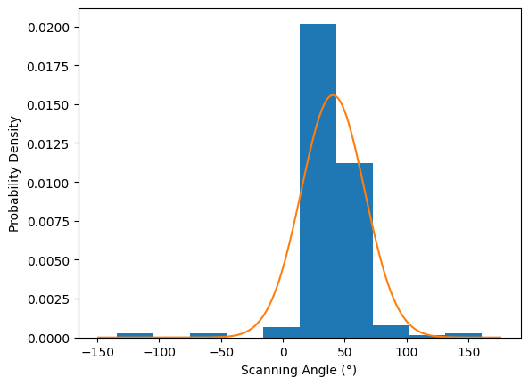
[8]:
structure_scores['scanning_angle_probability'] = structure_scores['scanning_angle'].apply(scanning_angle.pdf)
[9]:
x = np.linspace(-150, 150, 1000)
plt.plot(x, scanning_angle.pdf(x))
sns.histplot(structure_scores, hue='type', x='scanning_angle', stat='density', common_norm=False)
plt.show()
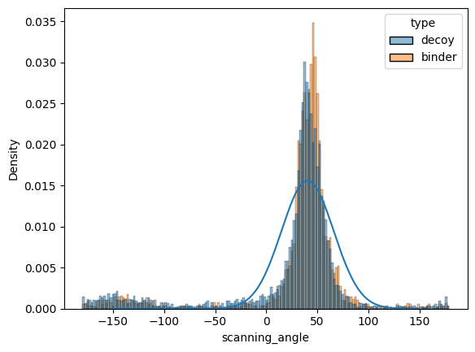
[ ]:
a, loc, scale = scipy.stats.gamma.fit(structural_features['pitch_angle'], floc=0)
print(f'alpha={a}, x={loc}, theta={scale}')
pitch_angle = scipy.stats.gamma(a=a, loc=loc, scale=scale)
ax = structural_features['pitch_angle'].plot.hist(density=True)
x = np.linspace(structural_features['pitch_angle'].min(), structural_features['pitch_angle'].max(), 100)
y = pitch_angle.pdf(x)
plt.plot(x, y, '-')
plt.xlabel('Pitch Angle (°)')
plt.ylabel('Probability Density')
plt.show()
alpha=0.9339133223102127, x=0, theta=8.960068358179377
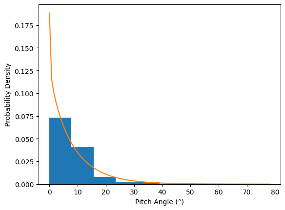
[11]:
structure_scores['pitch_angle_probability'] = structure_scores['pitch_angle'].apply(pitch_angle.pdf).replace(np.inf, 1)
[12]:
x = np.linspace(0, 50, 1000)
plt.plot(x, pitch_angle.pdf(x))
sns.histplot(structure_scores, x='pitch_angle', hue='type', stat='density', common_norm=False)
plt.show()
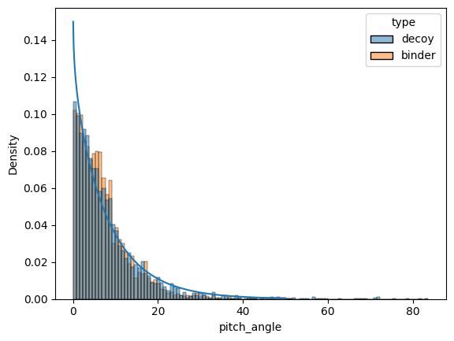
[ ]:
loc, scale = scipy.stats.norm.fit(structural_features['tilt_angle'])
print(f'mu={loc}, sigma={scale}')
tilt_angle = scipy.stats.norm(loc=loc, scale=scale)
ax = structural_features['tilt_angle'].plot.hist(density=True)
x = np.linspace(*ax.get_xlim(), 1000)
y = tilt_angle.pdf(x)
plt.plot(x, y, '-')
plt.xlabel('Tilt Angle (°)')
plt.ylabel('Probability Density')
plt.show()
mu=-4.704773566307938, sigma=17.168889236280467
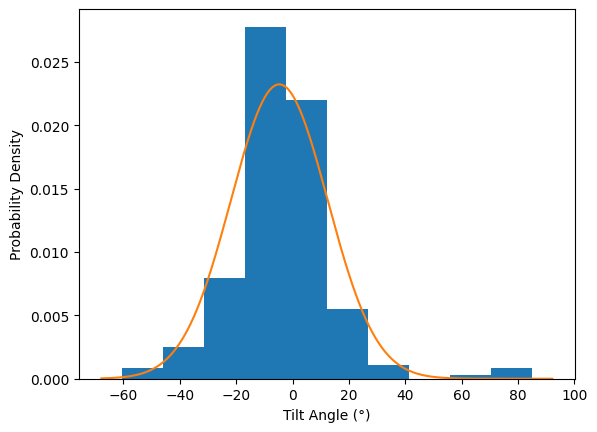
[14]:
structure_scores['tilt_angle_probability'] = structure_scores['tilt_angle'].apply(tilt_angle.pdf)
[15]:
x = np.linspace(-75, 75, 1000)
plt.plot(x, tilt_angle.pdf(x))
sns.histplot(structure_scores, x='tilt_angle', hue='type', stat='density', common_norm=False)
plt.show()
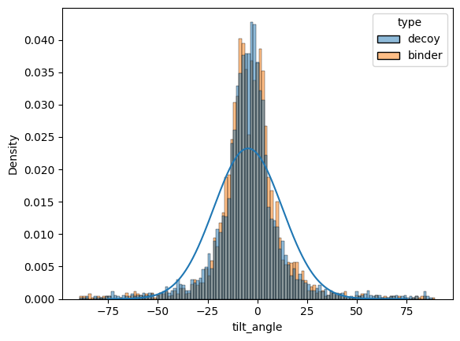
[ ]:
loc, scale = scipy.stats.norm.fit(structural_features['roll_angle'])
print(f'mu={loc}, sigma={scale}')
roll_angle = scipy.stats.norm(loc=loc, scale=scale)
ax = structural_features['roll_angle'].plot.hist(density=True)
x = np.linspace(*ax.get_xlim(), 1000)
y = roll_angle.pdf(x)
plt.plot(x, y, '-')
plt.xlabel('Roll Angle (°)')
plt.ylabel('Probability Density')
plt.show()
mu=-5.888230488650083, sigma=18.718168379095623
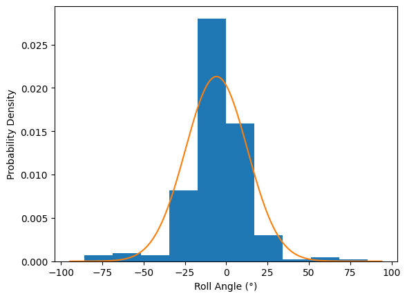
[17]:
structure_scores['roll_angle_probability'] = structure_scores['roll_angle'].apply(roll_angle.pdf)
[18]:
x = np.linspace(-75, 75, 1000)
plt.plot(x, roll_angle.pdf(x))
sns.histplot(structure_scores, x='roll_angle', hue='type', stat='density', common_norm=False)
plt.show()
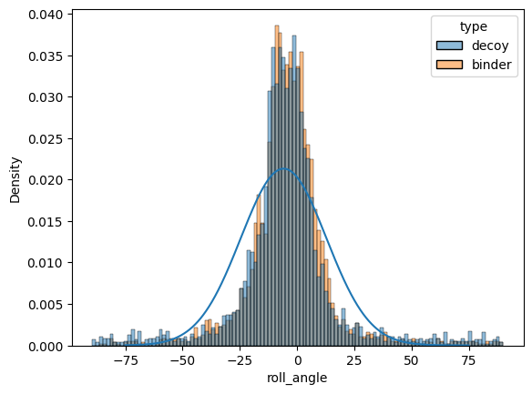
[ ]:
loc, scale = scipy.stats.norm.fit(structural_features['x_score'])
print(f'mu={loc}, sigma={scale}')
x_score = scipy.stats.norm(loc=loc, scale=scale)
ax = structural_features['x_score'].plot.hist(density=True)
x = np.linspace(*ax.get_xlim(), 1000)
y = x_score.pdf(x)
plt.plot(x, y, '-')
plt.xlabel('X-Distance (Å)')
plt.ylabel('Probability Density')
plt.show()
mu=0.18027696760976686, sigma=3.398610347694314
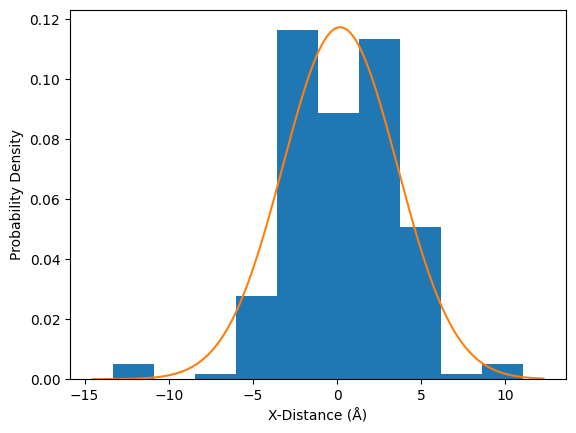
[20]:
structure_scores['x_score_probability'] = structure_scores['x_score'].apply(x_score.pdf)
[21]:
x = np.linspace(-15, 15, 1000)
plt.plot(x, x_score.pdf(x))
sns.histplot(structure_scores, x='x_score', hue='type', stat='density', common_norm=False)
plt.show()
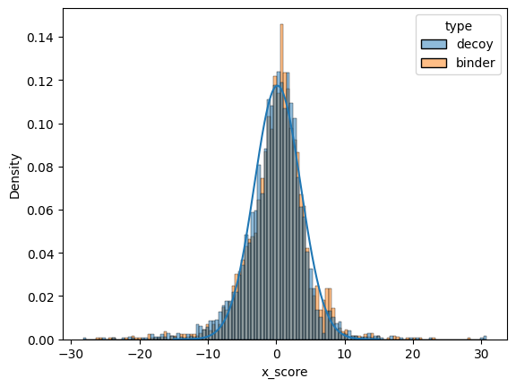
[ ]:
loc, scale = scipy.stats.norm.fit(structural_features['y_score'])
print(f'mu={loc}, sigma={scale}')
y_score = scipy.stats.norm(loc=loc, scale=scale)
ax = structural_features['y_score'].plot.hist(density=True)
x = np.linspace(*ax.get_xlim(), 1000)
y = y_score.pdf(x)
plt.plot(x, y, '-')
plt.xlabel('Y-Distance (Å)')
plt.ylabel('Probability Density')
plt.show()
mu=3.816825355321169, sigma=5.467852145913067
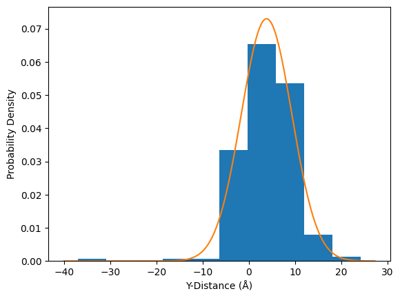
[23]:
structure_scores['y_score_probability'] = structure_scores['y_score'].apply(y_score.pdf)
[24]:
x = np.linspace(-30, 30, 1000)
plt.plot(x, y_score.pdf(x))
sns.histplot(structure_scores, x='y_score', hue='type', stat='density', common_norm=False)
plt.show()
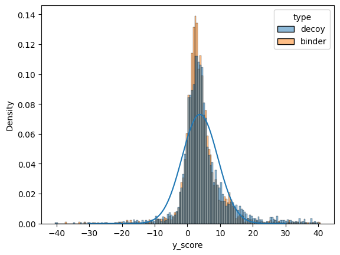
[25]:
def z_score(x: float | np.ndarray, means: np.ndarray, variances: np.ndarray, weights: np.ndarray) -> float | np.ndarray:
pdfs = [
w * scipy.stats.norm.pdf(x, loc=mu, scale=np.sqrt(var))
for w, mu, var in zip(weights, means, variances, strict=True)
]
return np.sum(pdfs, axis=0)
[ ]:
gmm = sklearn.mixture.GaussianMixture(n_components=2)
gmm.fit(structural_features['z_score'].to_numpy().reshape(-1, 1))
for mu, var, w in zip(gmm.means_.flatten(), gmm.covariances_.flatten(), gmm.weights_.flatten(), strict=True):
print(f'w={w}, mu={mu}, sigma={np.sqrt(var)}')
ax = structural_features['z_score'].plot.hist(bins=150, density=True)
x = np.linspace(*ax.get_xlim(), 1000)
y = z_score(x, gmm.means_.flatten(), gmm.covariances_.flatten(), gmm.weights_.flatten())
plt.plot(x, y, '-')
plt.xlabel('Z-Distance (Å)')
plt.ylabel('Probability Density')
plt.show()
w=0.996, mu=27.896280916819133, sigma=1.3678096093630185
w=0.004000000000000009, mu=-11.793846130371067, sigma=0.001
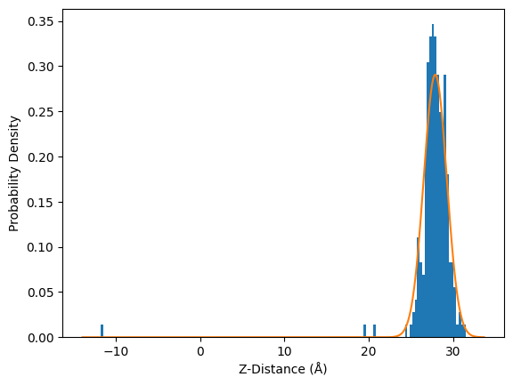
[27]:
structure_scores['z_score_probability'] = structure_scores['z_score'].apply(
z_score, means=gmm.means_.flatten(), variances=gmm.covariances_.flatten(), weights=gmm.weights_.flatten()
)
[28]:
x = np.linspace(20, 40, 1000)
plt.plot(x, z_score(x, gmm.means_.flatten(), gmm.covariances_.flatten(), gmm.weights_.flatten()))
sns.histplot(structure_scores, x='z_score', hue='type', stat='density', common_norm=False)
plt.show()
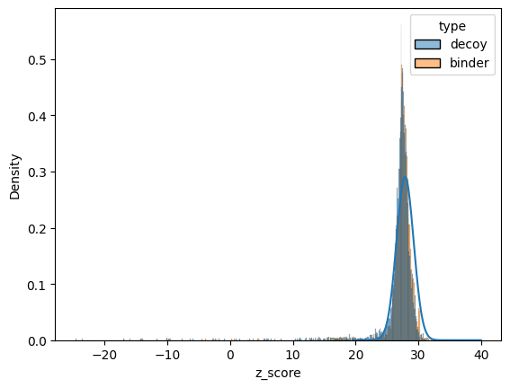
[29]:
contact_probabilities = pd.read_csv('../data/processed/tcr_pmhc_contacts.csv')
contact_probabilities['proportion'] = contact_probabilities.groupby('mhc_type')['proportion'].transform(
lambda group: group / group.sum()
)
contact_maps = pd.read_csv('../data/processed/predicted_af3_af3_tcrmodel2_contact_maps_1500.csv')
contact_scores = (
contact_maps.merge(
contact_probabilities,
how='left',
on=[col for col in contact_probabilities if col != 'proportion'],
)
.groupby(['name', 'seed', 'sample'])['proportion']
.aggregate(['sum', 'mean'])
)
contact_scores.columns = ['contact_map_probability_' + column_name for column_name in contact_scores.columns]
structure_scores = structure_scores.merge(
contact_scores, how='left', left_on=['name', 'seed', 'sample'], right_index=True
)
[30]:
fig, axes = plt.subplots(1, 2, figsize=(10, 5))
sns.boxplot(
structure_scores.melt(
id_vars=['type', 'label'],
value_vars='contact_map_probability_sum',
var_name='score',
value_name='probability',
),
x='score',
y='probability',
hue='type',
ax=axes[0],
)
sns.boxplot(
structure_scores.melt(
id_vars=['type', 'label'],
value_vars='contact_map_probability_mean',
var_name='score',
value_name='probability',
),
x='score',
y='probability',
hue='type',
ax=axes[1],
)
[30]:
<Axes: xlabel='score', ylabel='probability'>
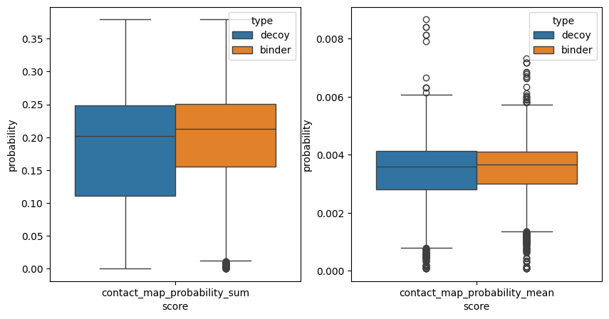
[31]:
structure_scores['contact_map_probability'] = structure_scores['contact_map_probability_mean']
[32]:
interactions = pd.read_csv('../data/processed/tcr_pmhc_interactions.csv')
[33]:
num_interactions = interactions.groupby('name').size()
[ ]:
fig, axes = plt.subplots(1, 2, figsize=(10, 5))
num_interactions.plot.hist(ax=axes[0], density=True)
x = np.linspace(num_interactions.min(), num_interactions.max(), 1000)
y = scipy.stats.norm.pdf(x, loc=num_interactions.mean(), scale=num_interactions.std())
print(f'mu={num_interactions.mean()}, sigma={num_interactions.std()}')
axes[0].plot(x, y, '-')
axes[0].set_xlabel('Number of interactions per TCR:pMHC complex')
axes[0].set_ylabel('Probability Density')
interactions.value_counts('type', normalize=True).plot.pie(ax=axes[1])
plt.show()
mu=6.714859437751004, sigma=2.9035260960849754
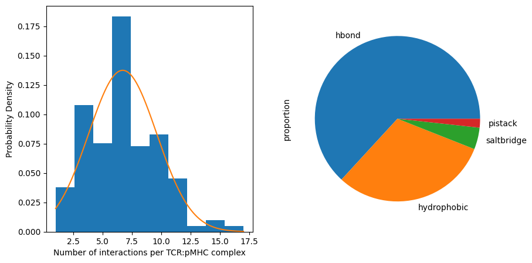
[35]:
interaction_types = interactions.value_counts(['type', 'name'])
[ ]:
colours = plt.rcParams['axes.prop_cycle'].by_key()['color']
total_count = interaction_types.sum()
interaction_types_parameters = {}
for i, (interaction_type, group) in enumerate(interaction_types.reset_index().groupby('type')):
interaction_types_parameters[interaction_type] = {}
colour = colours[i % len(colours)]
count = group['count']
group_count = count.sum()
weight = group_count / total_count
a, loc, scale = scipy.stats.gamma.fit(group['count'], floc=0)
print(f'{interaction_type}: a={a}, x={loc}, theta={scale}')
interaction_types_parameters[interaction_type]['weight'] = weight
interaction_types_parameters[interaction_type]['a'] = a
interaction_types_parameters[interaction_type]['loc'] = loc
interaction_types_parameters[interaction_type]['scale'] = scale
x = np.linspace(count.min(), count.max(), 1000)
y = scipy.stats.gamma.pdf(x, a=a, loc=loc, scale=scale) * weight
plt.plot(x, y, '-', color=colour)
counts, bins = np.histogram(count)
probabilities = (counts / counts.sum()) * weight
plt.stairs(
probabilities,
bins,
fill=True,
color=colour,
alpha=0.75,
label=interaction_type,
)
plt.legend()
plt.ylabel('Probability Density')
plt.xlabel('Number of interactions per TCR:pMHC Complex')
plt.show()
hbond: a=3.2679950802320947, x=0, theta=1.3297691415242419
hydrophobic: a=3.939773260697842, x=0, theta=0.6035576229863059
pistack: a=3.5748642220000426, x=0, theta=0.47718801246856307
saltbridge: a=8.174962676909084, x=0, theta=0.16386896117499328
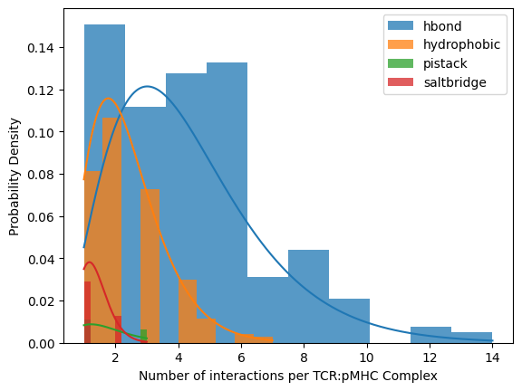
[37]:
af3_interactions = pd.read_csv('../data/processed/predicted_af3_af3_tcrmodel2_interactions_1500.csv')
af3_interactions = af3_interactions.merge(
entries, how='left', left_on='name', right_on='index', suffixes=('_interaction', '')
)
[38]:
af3_interaction_counts = af3_interactions.groupby(['type', 'label', 'name', 'seed', 'sample']).size()
af3_interaction_counts.name = 'count'
af3_interaction_counts = af3_interaction_counts.reset_index()
sns.histplot(af3_interaction_counts, x='count', hue='type', stat='density')
x = np.linspace(af3_interaction_counts['count'].min(), af3_interaction_counts['count'].max(), 1000)
y = scipy.stats.norm.pdf(x, loc=num_interactions.mean(), scale=num_interactions.std())
plt.plot(x, y, '-')
print('ROC-AUC:', sklearn.metrics.roc_auc_score(af3_interaction_counts['label'], af3_interaction_counts['count']))
plt.show()
ROC-AUC: 0.5430006459502296
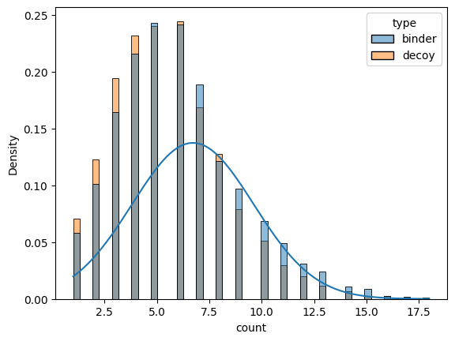
[39]:
af3_interaction_counts['num_interactions_probability'] = scipy.stats.norm.pdf(
af3_interaction_counts['count'], loc=num_interactions.mean(), scale=num_interactions.std()
)
structure_scores = structure_scores.merge(
af3_interaction_counts[['name', 'seed', 'sample', 'num_interactions_probability']],
how='left',
left_on=['name', 'seed', 'sample'],
right_on=['name', 'seed', 'sample'],
)
structure_scores['num_interactions_probability'] = structure_scores['num_interactions_probability'].fillna(0.0)
[40]:
af3_interaction_types = af3_interactions.value_counts(
['name', 'seed', 'sample', 'type', 'label', 'type_interaction']
).reset_index()
total_count = af3_interaction_types['count'].sum()
number_of_interaction_types = len(interaction_types_parameters)
fig, axes = plt.subplots(1, number_of_interaction_types, figsize=(5 * number_of_interaction_types, 5), sharey=True)
for i, (interaction_type, group) in enumerate(af3_interaction_types.groupby('type_interaction')):
group_count = group['count'].sum()
weight = group_count / total_count
for complex_type, sub_group in group.groupby('type'):
counts, bins = np.histogram(sub_group['count'])
probabilities = (counts / counts.sum()) * weight
axes[i].stairs(
probabilities,
bins,
fill=True,
alpha=0.75,
label=complex_type,
)
x = np.linspace(*axes[i].get_xlim(), 1000)
y = (
scipy.stats.gamma.pdf(
x,
a=interaction_types_parameters[interaction_type]['a'],
loc=interaction_types_parameters[interaction_type]['loc'],
scale=interaction_types_parameters[interaction_type]['scale'],
)
* interaction_types_parameters[interaction_type]['weight']
)
axes[i].plot(x, y, '-', color='black')
axes[i].set_title(interaction_type)
axes[i].legend()
print(interaction_type, 'ROC-AUC:', sklearn.metrics.roc_auc_score(group['label'], group['count']))
axes[0].set_ylabel('Probability Density')
fig.text(0.5, 0.04, 'Number of interactions per TCR:pMHC Complex', ha='center')
plt.show()
hbond ROC-AUC: 0.5279766489583673
hydrophobic ROC-AUC: 0.5124630147994917
pistack ROC-AUC: 0.5272046925566344
saltbridge ROC-AUC: 0.5355740371939076
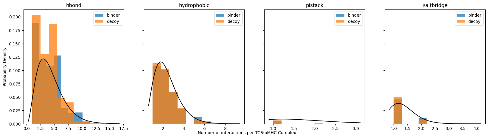
[41]:
index = pd.MultiIndex.from_frame(structure_scores[['name', 'seed', 'sample']])
probabilities = pd.Series(np.zeros(len(index)), index=index)
probabilities.name = 'interaction_type_probability'
for interaction_type, params in interaction_types_parameters.items():
interaction_type_counts = af3_interaction_types[
af3_interaction_types['type_interaction'] == interaction_type
].set_index(['name', 'seed', 'sample'])['count']
interaction_type_probabilities = interaction_type_counts.apply(
lambda counts, params=params: (
params['weight'] * scipy.stats.gamma.pdf(counts, a=params['a'], loc=params['loc'], scale=params['scale'])
),
)
interaction_type_probabilities.name = 'interaction_type_probability'
probabilities = probabilities.add(interaction_type_probabilities, fill_value=0.0)
structure_scores = structure_scores.merge(probabilities.reset_index(), how='left', on=['name', 'seed', 'sample'])
[42]:
tcr_pmhc_sc_and_bsa = pd.read_csv('../data/processed/tcr_pmhc_sc_and_bsa.csv', index_col='name')
[43]:
predicted_sc_and_bsa = pd.read_csv('../data/processed/predicted_af3_af3_tcrmodel2_sc_and_bsa_1500.csv')
[44]:
predicted_sc_and_bsa = predicted_sc_and_bsa.merge(entries, how='left', left_on='name', right_on='index')
[ ]:
loc, scale = scipy.stats.norm.fit(tcr_pmhc_sc_and_bsa['sc'])
print(f'mu={loc}, sigma={scale}')
sc_score = scipy.stats.norm(loc=loc, scale=scale)
ax = tcr_pmhc_sc_and_bsa['sc'].plot.hist(density=True)
x = np.linspace(0, 1, 1000)
y = sc_score.pdf(x)
ax.plot(x, y, '-')
ax.set_xlabel('Shape Complementarity (A.U.)')
ax.set_ylabel('Probability Density')
plt.show()
mu=0.6789347772816737, sigma=0.11286066788640256
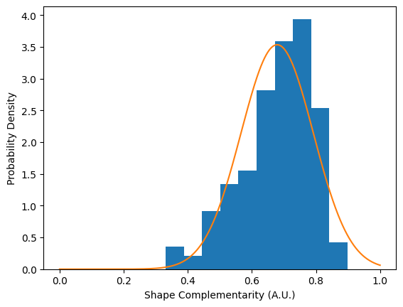
[46]:
predicted_sc_and_bsa['sc_probability'] = predicted_sc_and_bsa['sc'].apply(sc_score.pdf)
[47]:
x = np.linspace(0, 1, 1000)
plt.plot(x, sc_score.pdf(x))
sns.histplot(predicted_sc_and_bsa, x='sc', hue='type', stat='density', common_norm=False)
plt.show()
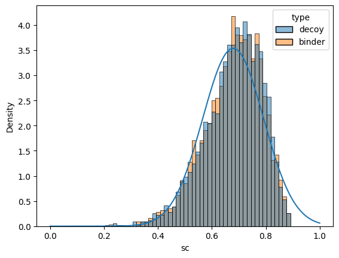
[ ]:
loc, scale = scipy.stats.norm.fit(tcr_pmhc_sc_and_bsa['bsa'])
print(f'mu={loc}, sigma={scale}')
bsa_score = scipy.stats.norm(loc=loc, scale=scale)
ax = tcr_pmhc_sc_and_bsa['bsa'].plot.hist(density=True)
x = np.linspace(*ax.get_xlim(), 1000)
y = bsa_score.pdf(x)
ax.plot(x, y, '-')
ax.set_xlabel(r'Buried Surface Area ($\AA^2$)')
ax.set_ylabel('Probability Density')
plt.show()
mu=1864.6291050366613, sigma=258.0470155183349
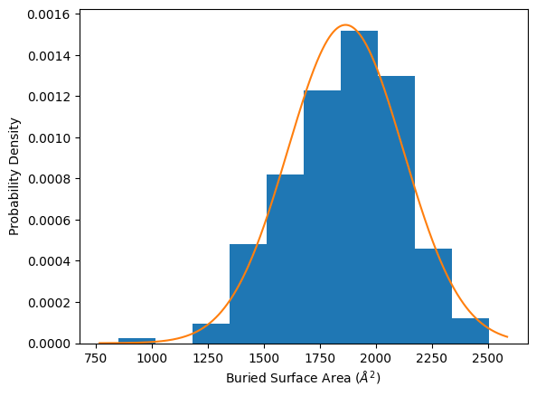
[49]:
predicted_sc_and_bsa['bsa_probability'] = predicted_sc_and_bsa['bsa'].apply(bsa_score.pdf)
[50]:
x = np.linspace(predicted_sc_and_bsa['bsa'].min(), predicted_sc_and_bsa['bsa'].max(), 1000)
plt.plot(x, bsa_score.pdf(x))
sns.histplot(predicted_sc_and_bsa, x='bsa', hue='type', stat='density', common_norm=False)
plt.show()
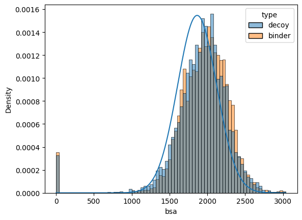
[51]:
structure_scores = structure_scores.merge(
predicted_sc_and_bsa[['name', 'seed', 'sample', 'sc_probability', 'bsa_probability']],
how='left',
on=['name', 'seed', 'sample'],
)
[52]:
structure_probability_names = [
'scanning_angle_probability',
'pitch_angle_probability',
'tilt_angle_probability',
'roll_angle_probability',
'x_score_probability',
'y_score_probability',
'z_score_probability',
'contact_map_probability',
'num_interactions_probability',
'interaction_type_probability',
'sc_probability',
'bsa_probability',
]
[53]:
structure_scores = structure_scores.dropna().copy()
[54]:
with np.errstate(divide='ignore'):
structure_scores['log_probability'] = structure_scores[structure_probability_names].apply(
lambda row: np.sum(np.log(row)), axis=1
)
[55]:
score_probabilities = structure_scores.melt(
id_vars=['type', 'label'],
value_vars=structure_probability_names,
var_name='score',
value_name='probability_density',
)
sns.catplot(score_probabilities, row='score', y='probability_density', hue='type', sharey=False, kind='box')
[55]:
<seaborn.axisgrid.FacetGrid at 0x7bf58d500d10>
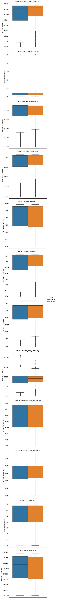
[56]:
for score_name, group in score_probabilities.groupby('score'):
print(score_name)
print(sklearn.metrics.roc_auc_score(group['label'], group['probability_density']))
bsa_probability
0.48380890059286685
contact_map_probability
0.5239544227328592
interaction_type_probability
0.5060952417093064
num_interactions_probability
0.5094997255409315
pitch_angle_probability
0.5133150154703134
roll_angle_probability
0.5131019640443912
sc_probability
0.5018657259751239
scanning_angle_probability
0.5293863515888326
tilt_angle_probability
0.4913107817994513
x_score_probability
0.5006135616315047
y_score_probability
0.5340894783630356
z_score_probability
0.5199538802864259
Feature processing
[57]:
structure_scores[structure_probability_names].hist(figsize=(10, 10))
plt.show()
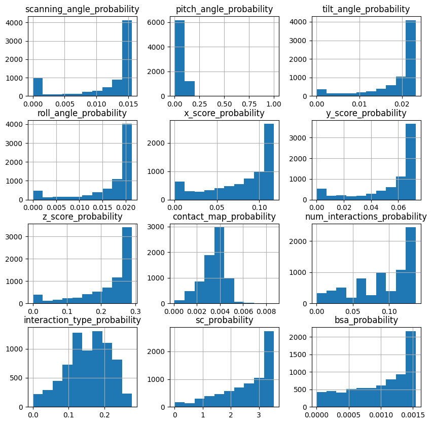
[58]:
for selected_column in (
'scanning_angle_probability',
'tilt_angle_probability',
'roll_angle_probability',
'x_score_probability',
'y_score_probability',
'z_score_probability',
'num_interactions_probability',
'sc_probability',
'bsa_probability',
):
fig, axes = plt.subplots(2, 2, figsize=(10, 10))
fig.suptitle(selected_column)
x = structure_scores[selected_column].to_numpy()
qt = sklearn.preprocessing.QuantileTransformer(output_distribution='normal', n_quantiles=100)
x_transformed = qt.fit_transform(x.reshape(-1, 1)).squeeze()
structure_scores[selected_column + '_transformed'] = x_transformed
axes[0, 0].hist(x)
scipy.stats.probplot(x, dist=scipy.stats.norm, plot=axes[0, 1])
axes[1, 0].hist(x_transformed)
scipy.stats.probplot(x_transformed, dist=scipy.stats.norm, plot=axes[1, 1])
structure_probability_names = [
column if column != selected_column else selected_column + '_transformed'
for column in structure_probability_names
]
plt.show()
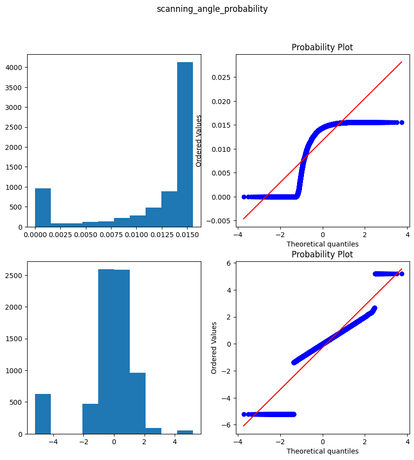
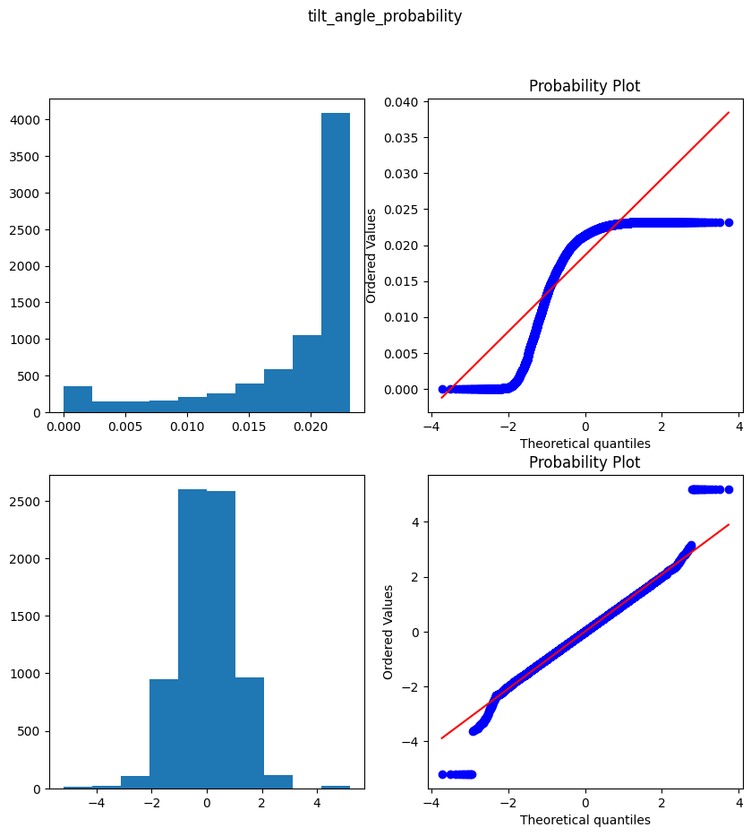
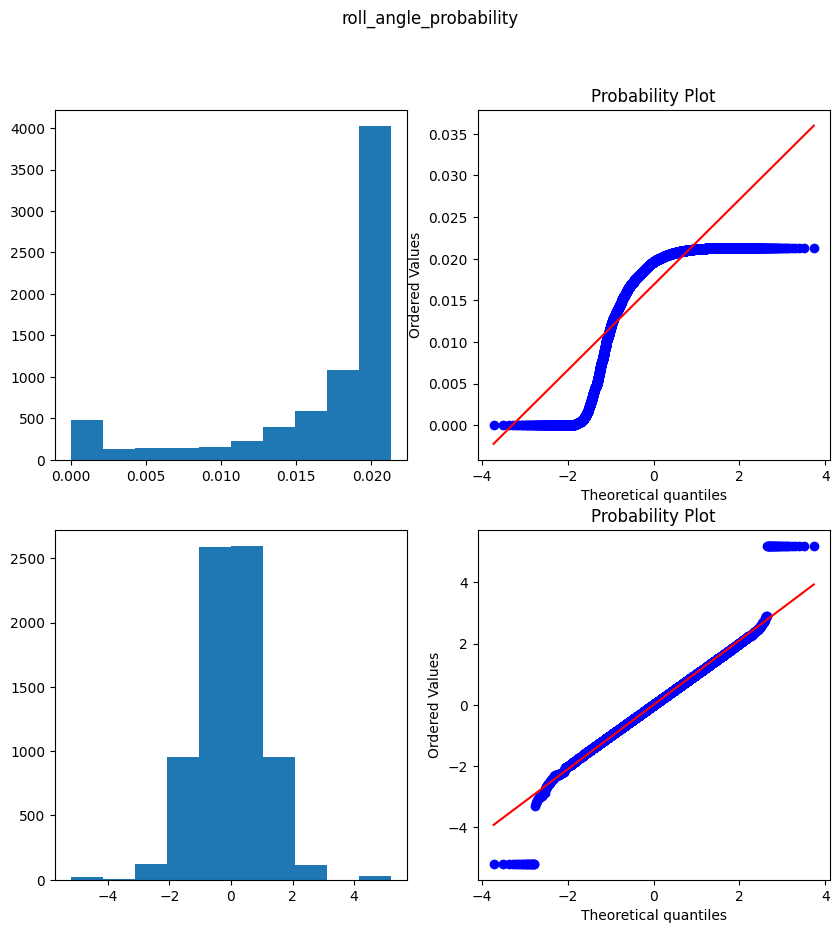
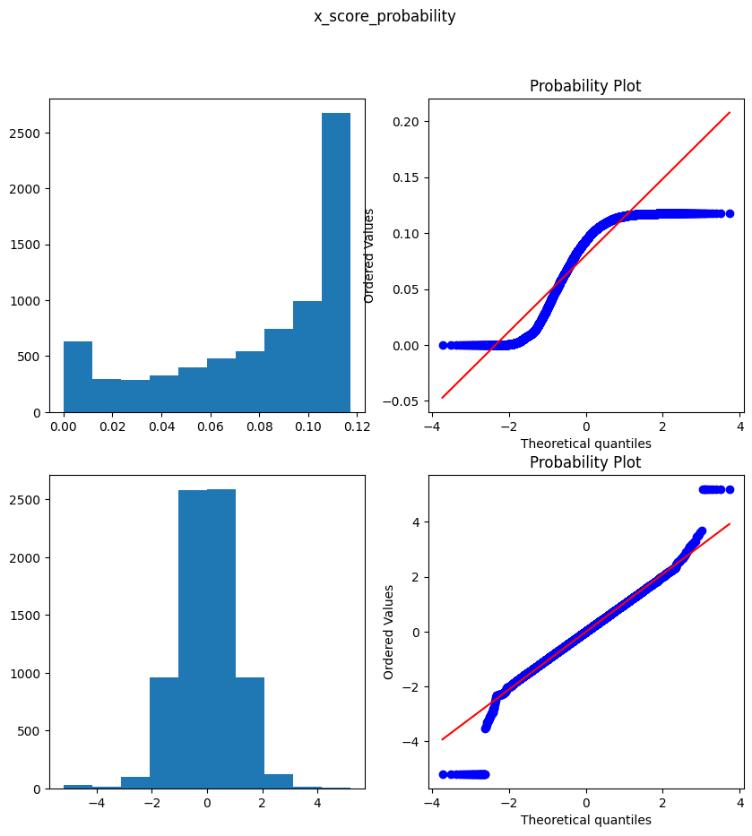
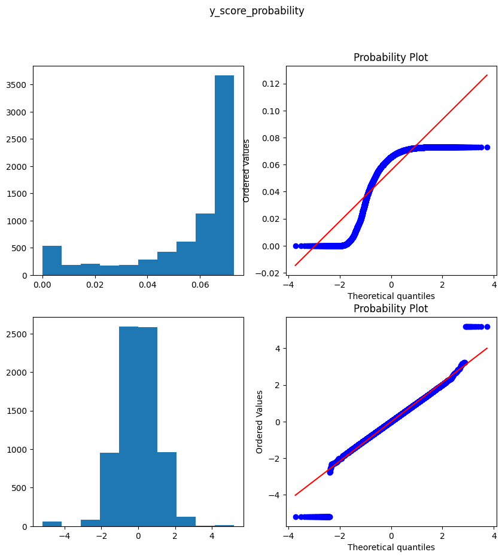
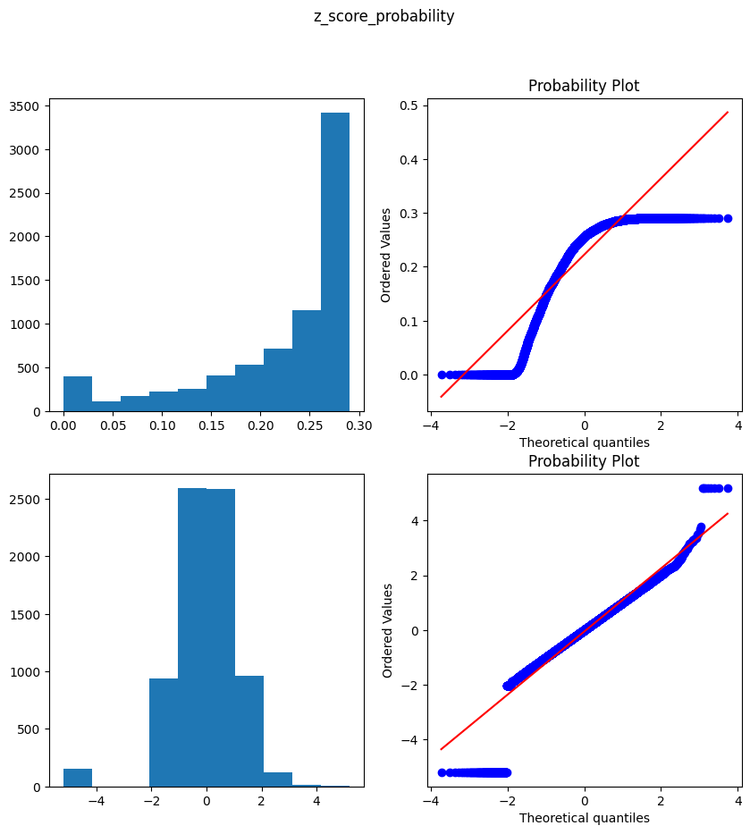
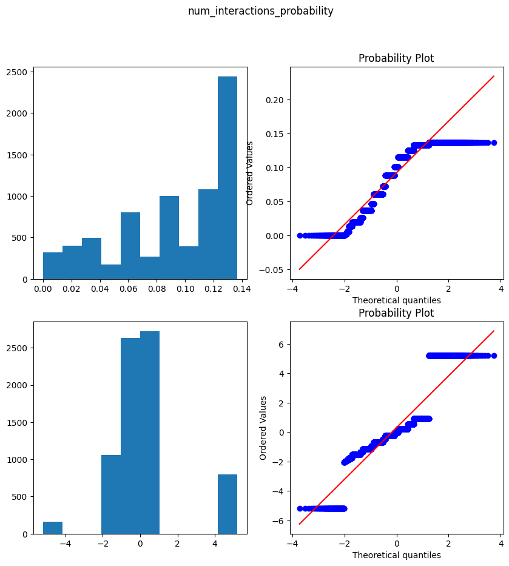
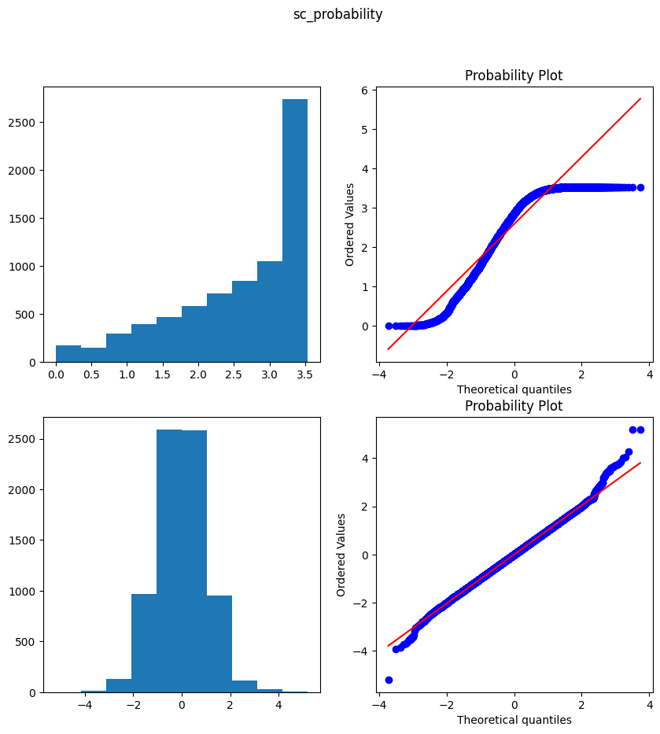
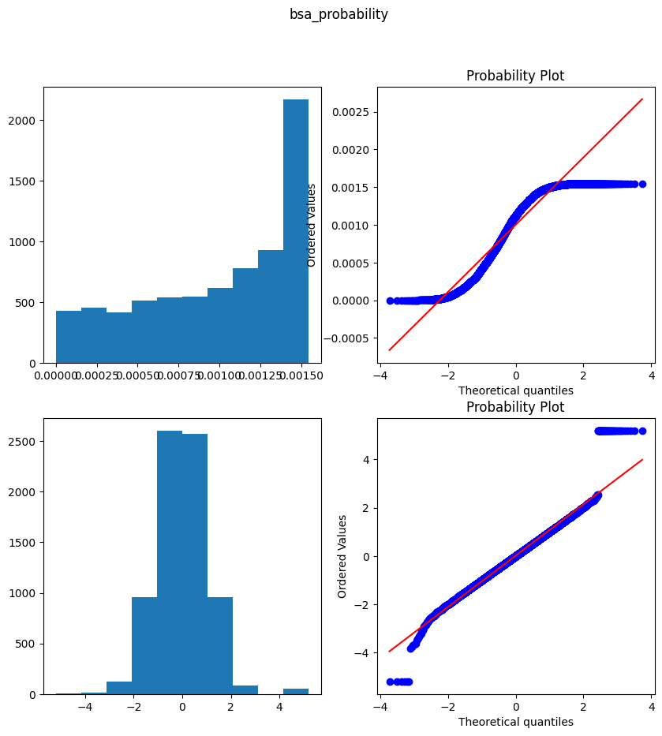
[59]:
structure_scores[structure_probability_names].hist(figsize=(10, 10))
plt.show()
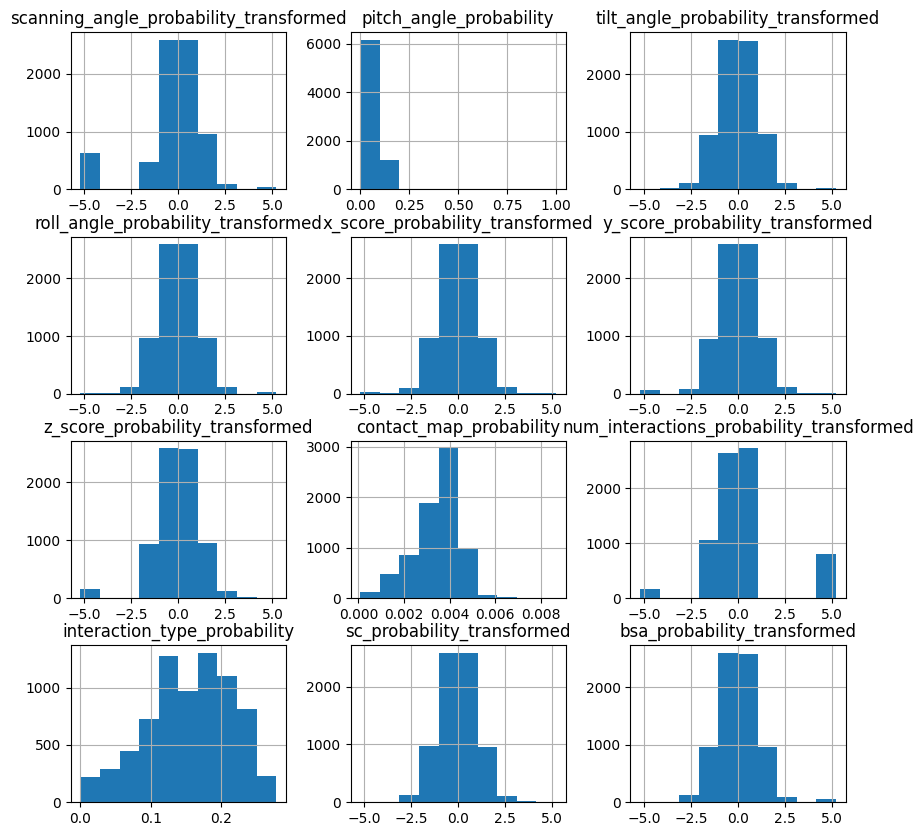
[ ]:
sns.heatmap(structure_scores[structure_probability_names].corr())
plt.show()
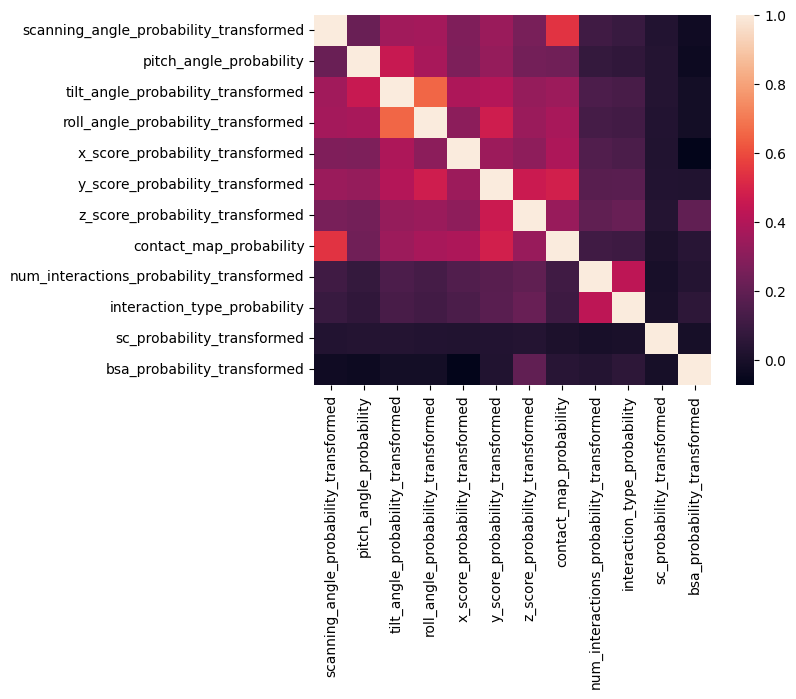
[61]:
structure_probability_names = [
column
for column in structure_probability_names
if column not in {'scanning_angle_probability_transformed', 'roll_angle_probability_transformed'}
]
Regression analysis
[62]:
regression_fits = defaultdict(list)
X = structure_scores[structure_probability_names]
X = sm.add_constant(X)
# PAE
pae_confidence_columns = sorted(structure_scores.filter(regex='pae').columns.tolist())
for confidence_column in pae_confidence_columns:
y = structure_scores[confidence_column]
y_max = structure_scores[confidence_column].max()
model = sm.OLS(y, X)
reg = model.fit()
pred_y = reg.fittedvalues
try:
with warnings.catch_warnings():
warnings.simplefilter('error', scipy.stats.ConstantInputWarning)
corr_coef, _ = scipy.stats.pearsonr(y, pred_y)
except scipy.stats.ConstantInputWarning:
print('Skipping', confidence_column)
continue
regression_fits['confidence_score'].append(confidence_column)
regression_fits['confidence_type'].append('PAE')
regression_fits['correlation_coef'].append(corr_coef)
regression_fits['r_squared'].append(reg.rsquared)
regression_fits['reg_summary'].append(str(reg.summary()))
coefficients = pd.concat([reg.params[1:], reg.bse[1:]], axis=1)
coefficients.columns = ['parameter', 'standard_error']
coefficients['t_stat'] = coefficients['parameter'] / coefficients['standard_error']
coefficients['probability'] = coefficients['t_stat'].apply(
lambda t_stat, dof=reg.df_resid: scipy.stats.t.cdf(t_stat, df=dof)
)
coefficients['significant'] = coefficients['probability'] < SIGNIFICANCE_LEVEL
for key, value in coefficients.stack().to_dict().items(): # noqa: PD013 stack cleaner here
regression_fits[key].append(value)
# (i)PTM
ptm_confidence_columns = sorted(structure_scores.filter(regex='ptm').columns.tolist())
for confidence_column in ptm_confidence_columns:
y = structure_scores[confidence_column]
y_max = structure_scores[confidence_column].max()
model = sm.OLS(y, X)
reg = model.fit()
pred_y = reg.fittedvalues
try:
with warnings.catch_warnings():
warnings.simplefilter('error', scipy.stats.ConstantInputWarning)
corr_coef, _ = scipy.stats.pearsonr(y, pred_y)
except scipy.stats.ConstantInputWarning:
print('Skipping', confidence_column)
continue
regression_fits['confidence_score'].append(confidence_column)
regression_fits['confidence_type'].append('(i)PTM')
regression_fits['correlation_coef'].append(corr_coef)
regression_fits['r_squared'].append(reg.rsquared)
regression_fits['reg_summary'].append(str(reg.summary()))
coefficients = pd.concat([reg.params[1:], reg.bse[1:]], axis=1)
coefficients.columns = ['parameter', 'standard_error']
coefficients['t_stat'] = coefficients['parameter'] / coefficients['standard_error']
coefficients['probability'] = coefficients['t_stat'].apply(
lambda t_stat, dof=reg.df_resid: 1 - scipy.stats.t.cdf(t_stat, df=dof)
)
coefficients['significant'] = coefficients['probability'] < SIGNIFICANCE_LEVEL
for key, value in coefficients.stack().to_dict().items(): # noqa: PD013 stack cleaner here
regression_fits[key].append(value)
# pLDDT
plddt_confidence_columns = sorted(structure_scores.filter(regex='plddt').columns.tolist())
for confidence_column in plddt_confidence_columns:
y = structure_scores[confidence_column]
y_max = structure_scores[confidence_column].max()
model = sm.OLS(y, X)
reg = model.fit()
pred_y = reg.fittedvalues
try:
with warnings.catch_warnings():
warnings.simplefilter('error', scipy.stats.ConstantInputWarning)
corr_coef, _ = scipy.stats.pearsonr(y, pred_y)
except scipy.stats.ConstantInputWarning:
print('Skipping', confidence_column)
continue
regression_fits['confidence_score'].append(confidence_column)
regression_fits['confidence_type'].append('pLDDT')
regression_fits['correlation_coef'].append(corr_coef)
regression_fits['r_squared'].append(reg.rsquared)
regression_fits['reg_summary'].append(str(reg.summary()))
coefficients = pd.concat([reg.params[1:], reg.bse[1:]], axis=1)
coefficients.columns = ['parameter', 'standard_error']
coefficients['t_stat'] = coefficients['parameter'] / coefficients['standard_error']
coefficients['probability'] = coefficients['t_stat'].apply(
lambda t_stat, dof=reg.df_resid: 1 - scipy.stats.t.cdf(t_stat, df=dof)
)
coefficients['significant'] = coefficients['probability'] < SIGNIFICANCE_LEVEL
for key, value in coefficients.stack().to_dict().items(): # noqa: PD013 stack cleaner here
regression_fits[key].append(value)
# IPSAE
ipsae_confidence_columns = sorted(structure_scores.filter(regex='ipsae').columns.tolist())
for confidence_column in ipsae_confidence_columns:
y = structure_scores[confidence_column]
y_max = structure_scores[confidence_column].max()
model = sm.OLS(y, X)
reg = model.fit()
pred_y = reg.fittedvalues
try:
with warnings.catch_warnings():
warnings.simplefilter('error', scipy.stats.ConstantInputWarning)
corr_coef, _ = scipy.stats.pearsonr(y, pred_y)
except scipy.stats.ConstantInputWarning:
print('Skipping', confidence_column)
continue
regression_fits['confidence_score'].append(confidence_column)
regression_fits['confidence_type'].append('IPSAE')
regression_fits['correlation_coef'].append(corr_coef)
regression_fits['r_squared'].append(reg.rsquared)
regression_fits['reg_summary'].append(str(reg.summary()))
coefficients = pd.concat([reg.params[1:], reg.bse[1:]], axis=1)
coefficients.columns = ['parameter', 'standard_error']
coefficients['t_stat'] = coefficients['parameter'] / coefficients['standard_error']
coefficients['probability'] = coefficients['t_stat'].apply(
lambda t_stat, dof=reg.df_resid: 1 - scipy.stats.t.cdf(t_stat, df=dof)
)
coefficients['significant'] = coefficients['probability'] < SIGNIFICANCE_LEVEL
for key, value in coefficients.stack().to_dict().items(): # noqa: PD013 stack cleaner here
regression_fits[key].append(value)
regression_fits = pd.DataFrame(regression_fits)
regression_fits = regression_fits.set_index('confidence_score')
regression_fits = regression_fits.sort_values('r_squared', ascending=False)
Skipping mhc_chain_1_mhc_chain_1_pae_min
Skipping mhc_chain_2_mhc_chain_2_pae_min
Skipping peptide_peptide_pae_min
Skipping tcr_alpha_chain_tcr_alpha_chain_pae_min
Skipping tcr_beta_chain_tcr_beta_chain_pae_min
[ ]:
default_colors = plt.rcParams['axes.prop_cycle'].by_key()['color']
confidence_types = regression_fits['confidence_type'].unique()
colour_map = {c: default_colors[i % len(default_colors)] for i, c in enumerate(confidence_types)}
colours = regression_fits['confidence_type'].map(colour_map)
ax = regression_fits['r_squared'].plot.bar(figsize=(15, 5), color=colours)
ax.set_ylabel('$R^2$')
handles = [
patches.Patch(color=colour_map[confidence_type], label=confidence_type) for confidence_type in confidence_types
]
ax.legend(handles=handles, title='Confidence Type', title_fontsize=12)
plt.show()
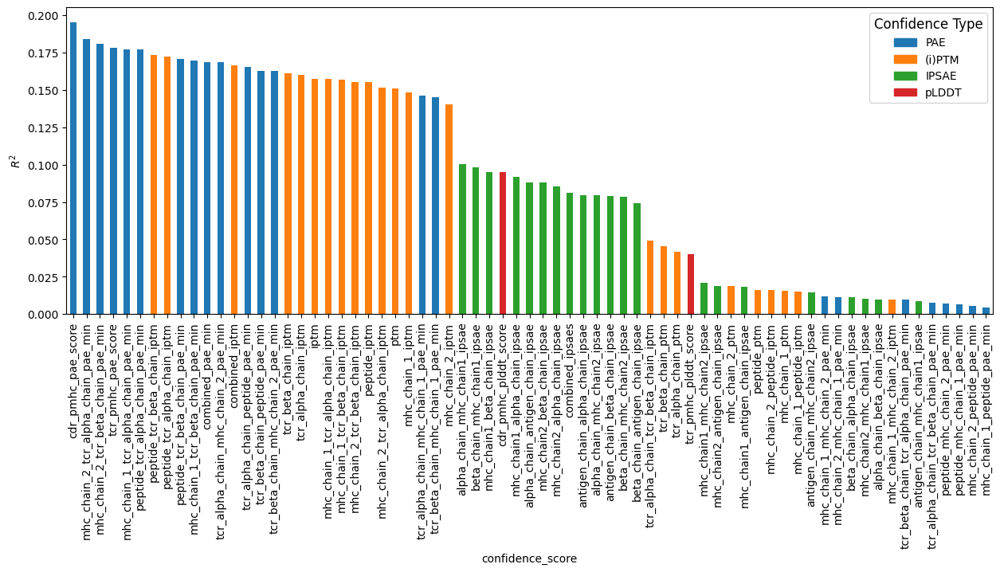
[64]:
print('==============================================================================================')
print('Best results:', regression_fits.iloc[0].name, 'R^2:', f"{regression_fits.iloc[0]['r_squared']: .2f}")
print('==============================================================================================')
print('\n')
print(regression_fits.iloc[0].name)
print('==============================================================================================')
print(f"Pearson's correlation: {regression_fits.iloc[0]['correlation_coef']:.2f}")
print(regression_fits.iloc[0]['reg_summary'])
print('\n\n')
==============================================================================================
Best results: cdr_pmhc_pae_score R^2: 0.20
==============================================================================================
cdr_pmhc_pae_score
==============================================================================================
Pearson's correlation: 0.44
OLS Regression Results
==============================================================================
Dep. Variable: cdr_pmhc_pae_score R-squared: 0.196
Model: OLS Adj. R-squared: 0.194
Method: Least Squares F-statistic: 179.0
Date: Thu, 02 Apr 2026 Prob (F-statistic): 0.00
Time: 17:35:43 Log-Likelihood: -22471.
No. Observations: 7375 AIC: 4.496e+04
Df Residuals: 7364 BIC: 4.504e+04
Df Model: 10
Covariance Type: nonrobust
============================================================================================================
coef std err t P>|t| [0.025 0.975]
------------------------------------------------------------------------------------------------------------
const 16.8075 0.321 52.431 0.000 16.179 17.436
pitch_angle_probability -2.0884 1.507 -1.386 0.166 -5.042 0.865
tilt_angle_probability_transformed -0.2412 0.069 -3.473 0.001 -0.377 -0.105
x_score_probability_transformed -0.3827 0.065 -5.888 0.000 -0.510 -0.255
y_score_probability_transformed -0.6911 0.069 -10.012 0.000 -0.826 -0.556
z_score_probability_transformed -0.4363 0.059 -7.390 0.000 -0.552 -0.321
contact_map_probability -1222.5982 70.858 -17.254 0.000 -1361.499 -1083.697
num_interactions_probability_transformed -0.1546 0.034 -4.608 0.000 -0.220 -0.089
interaction_type_probability -2.2185 1.108 -2.002 0.045 -4.390 -0.047
sc_probability_transformed 0.0302 0.058 0.518 0.604 -0.084 0.145
bsa_probability_transformed 0.1923 0.057 3.391 0.001 0.081 0.304
==============================================================================
Omnibus: 426.174 Durbin-Watson: 0.499
Prob(Omnibus): 0.000 Jarque-Bera (JB): 219.135
Skew: 0.251 Prob(JB): 2.60e-48
Kurtosis: 2.321 Cond. No. 2.50e+03
==============================================================================
Notes:
[1] Standard Errors assume that the covariance matrix of the errors is correctly specified.
[2] The condition number is large, 2.5e+03. This might indicate that there are
strong multicollinearity or other numerical problems.
[65]:
coeficient_columns = ['parameter', 'standard_error', 't_stat', 'probability', 'significant']
coefficients = regression_fits.iloc[0][
[name for name in regression_fits.iloc[0].index if type(name) is tuple and name[1] in coeficient_columns]
]
coefficients.index = pd.MultiIndex.from_tuples(coefficients.index)
coefficients = coefficients.unstack() # noqa: PD010 unstack cleaner here
coefficients = coefficients[coeficient_columns]
coefficients
[65]:
| parameter | standard_error | t_stat | probability | significant | |
|---|---|---|---|---|---|
| bsa_probability_transformed | 0.192349 | 0.056719 | 3.391283 | 0.99965 | False |
| contact_map_probability | -1222.598161 | 70.857662 | -17.254283 | 0.0 | True |
| interaction_type_probability | -2.218479 | 1.107982 | -2.00227 | 0.022646 | True |
| num_interactions_probability_transformed | -0.154562 | 0.033543 | -4.607866 | 0.000002 | True |
| pitch_angle_probability | -2.088434 | 1.506533 | -1.386252 | 0.082856 | False |
| sc_probability_transformed | 0.030233 | 0.058362 | 0.518025 | 0.697772 | False |
| tilt_angle_probability_transformed | -0.241192 | 0.069438 | -3.473499 | 0.000258 | True |
| x_score_probability_transformed | -0.38274 | 0.065004 | -5.887946 | 0.0 | True |
| y_score_probability_transformed | -0.691109 | 0.06903 | -10.01175 | 0.0 | True |
| z_score_probability_transformed | -0.43632 | 0.059039 | -7.390357 | 0.0 | True |
[ ]:
fig, axes = plt.subplots(1, len(structure_probability_names), figsize=(5 * len(structure_probability_names), 5))
y = structure_scores[regression_fits.iloc[0].name]
y_max = structure_scores[regression_fits.iloc[0].name].max()
axes[0].set_ylabel(regression_fits.iloc[0].name)
for i, column in enumerate(structure_probability_names):
x = structure_scores[column]
sns.kdeplot(x=x, y=y, cmap='Blues', fill=True, thresh=0, levels=10, ax=axes[i])
reg = scipy.stats.linregress(x, y)
x = np.linspace(x.min(), x.max())
y_pred = reg.slope * x + reg.intercept
axes[i].plot(x, y_pred, 'r--')
axes[i].text(
0.85,
0.90,
f'$R^2={reg.rvalue**2: .2f}$\n($R={reg.rvalue: .2f}$)',
transform=axes[i].transAxes,
horizontalalignment='right',
verticalalignment='top',
fontsize=12,
)
axes[i].set_xlabel(column)
axes[i].set_ylim(0, y_max)
plt.show()
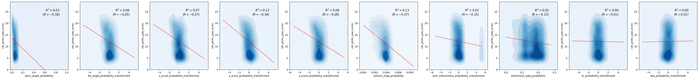
Analysing results robustness
Removing outliers using Mahalanobis distance
[67]:
data = structure_scores[[*structure_probability_names, 'cdr_pmhc_pae_score']]
centre = data.mean(axis=0)
centred_data = data.to_numpy() - centre.to_numpy().reshape(1, -1)
covariance = np.cov(data, rowvar=False)
covariance_inv = np.linalg.inv(covariance)
distances = np.dot(np.dot(centred_data, covariance_inv), centred_data.T).diagonal()
[68]:
data_no_outliers = data.loc[distances <= scipy.stats.chi2.ppf(0.95, data.shape[1])]
data_outliers = data.loc[distances > scipy.stats.chi2.ppf(0.95, data.shape[1])]
[69]:
def check_constant_column(column: pd.Series) -> bool:
return (column.iloc[0] == column).all()
contstant_columns_to_drop = [
column_name for column_name in data_no_outliers.columns if check_constant_column(data_no_outliers[column_name])
]
print('Dropping constant columns', contstant_columns_to_drop)
data_no_outliers = data_no_outliers[
[column_name for column_name in data_no_outliers.columns if column_name not in contstant_columns_to_drop]
]
no_outliers_structure_columns = [
column_name for column_name in data_no_outliers.columns if column_name != 'cdr_pmhc_pae_score'
]
Dropping constant columns []
[70]:
X = data_no_outliers[no_outliers_structure_columns]
X = sm.add_constant(X, has_constant='raise')
y = data_no_outliers['cdr_pmhc_pae_score']
[71]:
model = sm.OLS(y, X)
reg = model.fit()
pred_y = reg.fittedvalues
with warnings.catch_warnings():
warnings.simplefilter('error', scipy.stats.ConstantInputWarning)
corr_coef, _ = scipy.stats.pearsonr(y, pred_y)
print(reg.summary())
coefficients = pd.concat([reg.params[1:], reg.bse[1:]], axis=1)
coefficients.columns = ['parameter', 'standard_error']
coefficients['t_stat'] = coefficients['parameter'] / coefficients['standard_error']
coefficients['probability'] = coefficients['t_stat'].apply(
lambda t_stat, dof=reg.df_resid: scipy.stats.t.cdf(t_stat, df=dof)
)
coefficients['significant'] = coefficients['probability'] < SIGNIFICANCE_LEVEL
coefficients
OLS Regression Results
==============================================================================
Dep. Variable: cdr_pmhc_pae_score R-squared: 0.155
Model: OLS Adj. R-squared: 0.154
Method: Least Squares F-statistic: 125.1
Date: Thu, 02 Apr 2026 Prob (F-statistic): 1.43e-240
Time: 17:36:19 Log-Likelihood: -20669.
No. Observations: 6824 AIC: 4.136e+04
Df Residuals: 6813 BIC: 4.144e+04
Df Model: 10
Covariance Type: nonrobust
============================================================================================================
coef std err t P>|t| [0.025 0.975]
------------------------------------------------------------------------------------------------------------
const 17.2890 0.370 46.742 0.000 16.564 18.014
pitch_angle_probability -3.5488 2.242 -1.583 0.113 -7.943 0.846
tilt_angle_probability_transformed -0.1594 0.082 -1.942 0.052 -0.320 0.001
x_score_probability_transformed -0.3424 0.075 -4.575 0.000 -0.489 -0.196
y_score_probability_transformed -0.6107 0.080 -7.679 0.000 -0.767 -0.455
z_score_probability_transformed -0.2616 0.071 -3.659 0.000 -0.402 -0.121
contact_map_probability -1461.2419 80.687 -18.110 0.000 -1619.413 -1303.070
num_interactions_probability_transformed -0.1549 0.037 -4.217 0.000 -0.227 -0.083
interaction_type_probability -0.5653 1.168 -0.484 0.628 -2.854 1.724
sc_probability_transformed 0.0100 0.062 0.162 0.871 -0.111 0.131
bsa_probability_transformed 0.2401 0.066 3.654 0.000 0.111 0.369
==============================================================================
Omnibus: 478.598 Durbin-Watson: 0.507
Prob(Omnibus): 0.000 Jarque-Bera (JB): 229.892
Skew: 0.267 Prob(JB): 1.20e-50
Kurtosis: 2.277 Cond. No. 2.49e+03
==============================================================================
Notes:
[1] Standard Errors assume that the covariance matrix of the errors is correctly specified.
[2] The condition number is large, 2.49e+03. This might indicate that there are
strong multicollinearity or other numerical problems.
[71]:
| parameter | standard_error | t_stat | probability | significant | |
|---|---|---|---|---|---|
| pitch_angle_probability | -3.548801 | 2.241714 | -1.583075 | 5.672537e-02 | False |
| tilt_angle_probability_transformed | -0.159441 | 0.082089 | -1.942295 | 2.607125e-02 | True |
| x_score_probability_transformed | -0.342449 | 0.074847 | -4.575290 | 2.419916e-06 | True |
| y_score_probability_transformed | -0.610690 | 0.079530 | -7.678762 | 9.156934e-15 | True |
| z_score_probability_transformed | -0.261624 | 0.071493 | -3.659447 | 1.273354e-04 | True |
| contact_map_probability | -1461.241907 | 80.686866 | -18.110034 | 6.229728e-72 | True |
| num_interactions_probability_transformed | -0.154939 | 0.036740 | -4.217112 | 1.253273e-05 | True |
| interaction_type_probability | -0.565295 | 1.167631 | -0.484138 | 3.141517e-01 | False |
| sc_probability_transformed | 0.009989 | 0.061575 | 0.162231 | 5.644355e-01 | False |
| bsa_probability_transformed | 0.240129 | 0.065709 | 3.654414 | 9.998701e-01 | False |
[ ]:
fig, axes = plt.subplots(1, len(no_outliers_structure_columns), figsize=(5 * len(no_outliers_structure_columns), 5))
y_max = y.max()
axes[0].set_ylabel(regression_fits.iloc[0].name)
for i, column in enumerate(no_outliers_structure_columns):
x = X[column]
sns.kdeplot(x=x, y=y, cmap='Blues', fill=True, thresh=0, levels=10, ax=axes[i], warn_singular=False)
try:
reg = scipy.stats.linregress(x, y)
except ValueError:
pass
else:
x = np.linspace(x.min(), x.max())
y_pred = reg.slope * x + reg.intercept
axes[i].plot(x, y_pred, 'r--')
axes[i].text(
0.85,
0.90,
f'$R^2={reg.rvalue**2: .2f}$\n($R={reg.rvalue: .2f}$)',
transform=axes[i].transAxes,
horizontalalignment='right',
verticalalignment='top',
fontsize=12,
)
axes[i].set_xlabel(column)
axes[i].set_ylim(0, y_max)
plt.show()
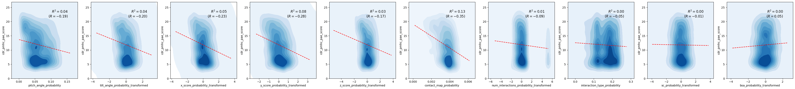
Bootstrapping results
[73]:
bootstrap_fits = defaultdict(list)
num_samples = 100
sample_size = 1_000
rng = np.random.default_rng(123)
for _ in range(num_samples):
sample = data_no_outliers.sample(sample_size, random_state=rng)
X = sample[no_outliers_structure_columns]
X = sm.add_constant(X)
y = sample['cdr_pmhc_pae_score']
model = sm.OLS(y, X)
reg = model.fit()
pred_y = reg.fittedvalues
corr_coef, _ = scipy.stats.pearsonr(y, pred_y)
bootstrap_fits['correlation_coef'].append(corr_coef)
bootstrap_fits['r_squared'].append(reg.rsquared)
bootstrap_fits['reg_summary'].append(str(reg.summary()))
coefficients = pd.concat([reg.params[1:], reg.bse[1:]], axis=1)
coefficients.columns = ['parameter', 'standard_error']
coefficients['t_stat'] = coefficients['parameter'] / coefficients['standard_error']
coefficients['probability'] = coefficients['t_stat'].apply(
lambda t_stat, dof=reg.df_resid: scipy.stats.t.cdf(t_stat, df=dof)
)
coefficients['significant'] = coefficients['probability'] < SIGNIFICANCE_LEVEL
for key, value in coefficients.stack().to_dict().items(): # noqa: PD013 stack cleaner here
bootstrap_fits[key].append(value)
bootstrap_fits = pd.DataFrame(bootstrap_fits)
[74]:
bootstrap_significance = bootstrap_fits[
[
column_name
for column_name in bootstrap_fits.columns
if type(column_name) is tuple and column_name[1] == 'significant'
]
]
bootstrap_significance.columns = [column_name[0] for column_name in bootstrap_significance.columns]
bootstrap_significance = bootstrap_significance.melt(
value_vars=bootstrap_significance.columns, var_name='property', value_name='significant'
)
[ ]:
ax = (
bootstrap_significance.map(str)
.value_counts()
.reset_index()
.pivot_table(index='property', columns='significant', values='count')
.fillna(0)
.map(int)
.sort_values('True', ascending=False)
.plot.bar()
)
ax.yaxis.set_major_formatter(PercentFormatter())
handles, labels = ax.get_legend_handles_labels()
labels, handles = zip(*sorted(zip(labels, handles, strict=True), key=lambda t: t[0], reverse=True), strict=True)
ax.legend(handles, labels, title='Significant', loc='upper right')
ax.set_title('Bootstrapped regression analysis for structural features')
plt.show()
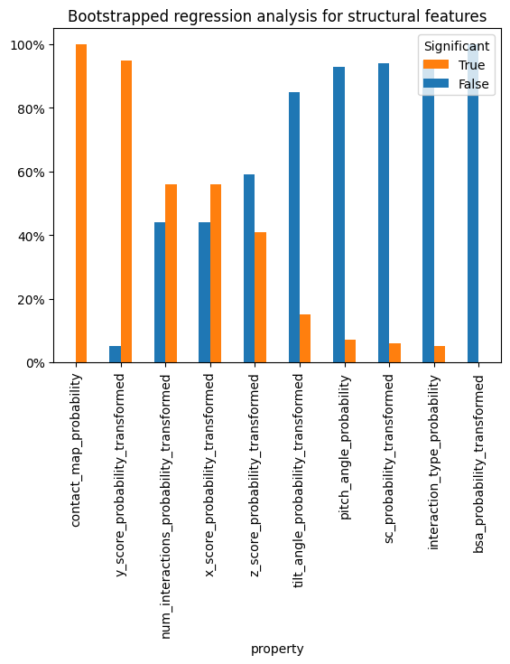